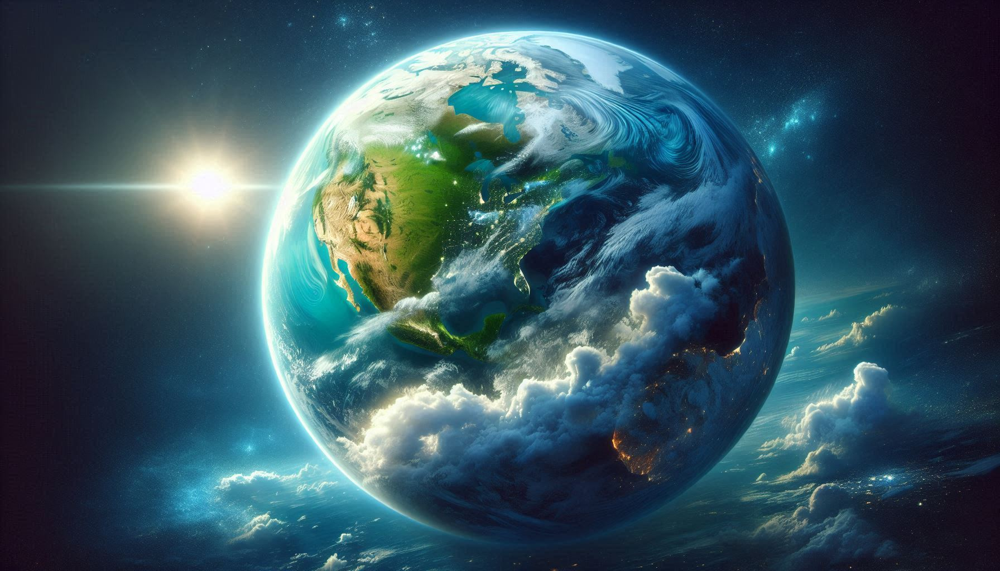

نظرة عامة
النظام الشمسي هو النظام الكوكبي الذي تقع فيه الأرض. يتكون من الشمس وجميع الأجرام السماوية التي تدور حولها.
الكواكب
| الكوكب | البعد عن الشمس | الخصائص الرئيسية | |
|---|---|---|---|
| عطارد | 57.9 مليون كم | أقرب كوكب إلى الشمس وأصغر الكواكب | |
| الزهرة | 108.2 مليون كم | ثاني أكثر الكواكب سخونة | |
| الأرض | 149.6 مليون كم | الكوكب الوحيد المعروف بوجود حياة عليه | يحتوي على قمر واحد |

عطارد
أقرب كوكب إلى الشمس ويمتاز بحجمه الصغير وسرعته الكبيرة في مداره.

الزهرة
يعتبر الكوكب الأكثر سخونة في المجموعة الشمسية بسبب غلافه الجوي الكثيف.

الأرض
الكوكب الوحيد المعروف بوجود الحياة عليه ويحتوي على محيطات وأجواء متنوعة.
حقائق مثيرة
هل تعلم؟
يمكن أن تحتوي حلقات زحل على جزيئات من الماء المتجمد!